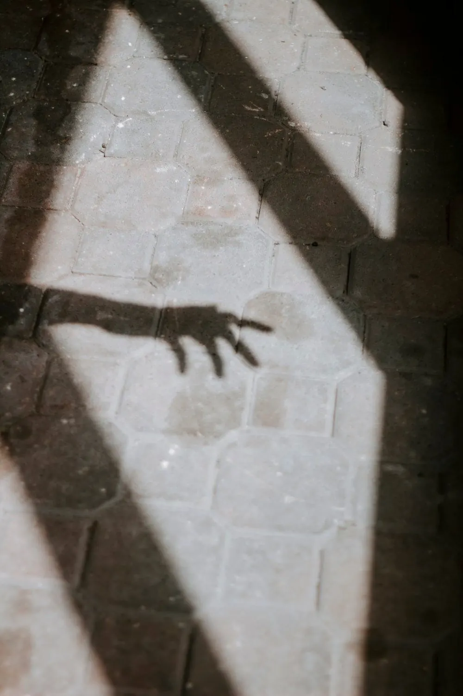

Diario de un Robot · 28 de diciembre de 2020December 28, 2020 · Serie: Anecdotario
Anecdotario 03: Claroscuro, felicidad y nuevos vientos
“El dolor es una luz que nos ilumina la vida”. — Balzac
This essay is only available in Spanish for now.
“El dolor es una luz que nos ilumina la vida”. — Balzac

Pasado
A través de la luz visitaba islas. La técnica era sencilla: miraba fijo una lámpara hasta que me ardieran los ojos, luego los cerraba y me recostaba. Aparecía un halo iridiscente donde antes estaba la fuente. La observaba con detenimiento, primero desde lejos, como si sacase fotos desde un avión. Me acercaba con un zoom mecánico, de a pasos salteados, deformando y estirando la mancha lumínica. Se definían entonces los bordes ocultos bajo el trazo, fiordos, ríos y afluentes. Como un perfil topográfico el centro era rojizo y de fuerte destello, hacia los lados decaía en naranjas y amarillos, incluso azules y violetas. Allí tenía mis costas, algún lago o múltiples ríos. Volvía a abrir los ojos, repetía el proceso, ahora en otro ángulo.
Investigaba así mayores facetas, los colores se superponían, la luz interfería en bandas intrincadas, las islas se multiplicaban. Así descubrí el archipiélago: un rosario de formaciones lumínicas, mi palacio mental de luz y sombras. Poblé las costas de arena incandescente, las laderas de árboles otoñales y la cima de lava. Pero no es la luz lo que define, sino la oscuridad. En las manchas negras siempre lo veía, un túnel, una puerta, una entrada a la mazmorra. La introspección tenía forma de castillo y allí dejaba abierta su reja y su puente levadizo. Algo me llamaba, algo me esperaba allí. La tensión de nervios aguerridos era mayor imán que la repulsión del miedo.
Dentro había algo, no un objeto, no solo un lugar; un algo móvil, vivo. Planeaba directo hasta su puerta y en espíritu recorría su morada. Los pasillos de sombra eran incluso más oscuros en sus encrucijadas. Un aliento neblinoso me seguía y me esperaba, rodeaba mi conciencia sumergida. Vapor de pantano y barro en los pies. El juego mortificador me obligaba hacia la zona, el nivel difícil, la caverna. Los ojos cerrados y la habitación silenciosa, primaba la vista ciega y el olfato imaginario. Sabía que no había quedado sordo al sentir el tacto fantasmal y gritar.
La última vez estaba afuera, ya mayor, miré el Sol y me encandilé, cerré los ojos y allí lo vi: el castillo en ruinas, el camino olvidado de hace tanto sin visitas. Vencido el antiguo morador, quedaba vacante para un nuevo monstruo.
Presente
“Si estamos en un cuarto oscuro y decimos que no hay luz es porque alguna vez hemos visto la luz. Algo parecido sucede con la felicidad”. — Swami Tilak
Dos verbos especialmente confusos para los extranjeros son nuestros “ser” y “estar”. Para los nativos es quizás automática la diferencia, pero muchas lenguas no hacen distinción entre ambos. A pesar de querer establecer una norma que los clasifique, el problema nos elude. Una opción es pensarlos como permanente-transitorio o inherente-accidental. De esta manera, no es lo mismo decir: “José es simpático” que “José está simpático” (la segunda versión casi asume que habitualmente no lo es).
Asociado a este conflicto nace una dicotomía fundamental: ser feliz contra estar feliz. Si mantenemos la distinción previa (permanente o transitorio) surge una consideración esencial: la búsqueda humana común, esa que casi todos compartimos, puede errar por un cambio verbal. Cuando el destino elegido es ser feliz nos encontraremos con un problema: no es posible. La felicidad no es una cualidad inherente, no es una característica intrínseca que al descubrirla se queda junto a nosotros, es un estado transitorio asociado a una acción o situación particular. El diccionario de Oxford Languages propone esta definición (refiriéndose a una persona): “Que se siente plenamente satisfecho por gozar de todo lo que desea o por disfrutar de algo bueno.” Si creemos que este estado puede ser permanente todavía no salimos del útero.
Estar feliz, en cambio, es una sensación que la mayoría experimentamos, aunque sea una vez cada tanto. En mi caso puedo encontrarla en un par de lugares: después de un trabajo difícil y extenso que requiere de gran esfuerzo y da resultado, en momentos compartidos con mi familia, o esa sensación mutua que encuentro repetida desde hace varios meses con mi pareja. Estos no son estados permanentes, con suerte duran un par de horas y, como los sueños, se disipan una vez pasada la noche, pero, al igual que ellos, podemos recordarlos al anotar.
La felicidad es un objetivo difícil, suele evadirnos si la buscamos. Sin embargo, recordar la ya vivida, transfigurada en agradecimiento, puede ser un ejercicio sano y un buen detector para identificarla.
Futuro
El fin de año viene acompañado de mi época de evaluación. Cada primero de enero llega una revisión de lo pasado y algunas proyecciones futuras. Ya tengo preparado un cuaderno nuevo para empezar y la mente lista para una buena limpieza. Aprendí que, así como no siempre es bueno acumular objetos, lo mismo pasa con los pensamientos, actividades y vínculos. En cada iteración hago un repaso consciente de qué deseo que permanezca en mi vida y qué estaría bueno que se vaya.
Esta vez entré en conflicto desde antes. A pesar de haber disfrutado la escritura y confección de este newsletter, tengo la sensación de no estar dando lo mejor posible. Necesito aún más práctica como escritor para poder brindar textos de los cuales esté orgulloso. Es por esto que quiero analizar si podré continuar el proyecto o al menos si mantendrá su formato.
Sin embargo, me encanta que me leas y agradezco la confianza a la hora de suscribirte a Diario de un Robot. Todavía no es una decisión tomada, hablamos el año que viene.
¡Feliz año nuevo!
Fidel